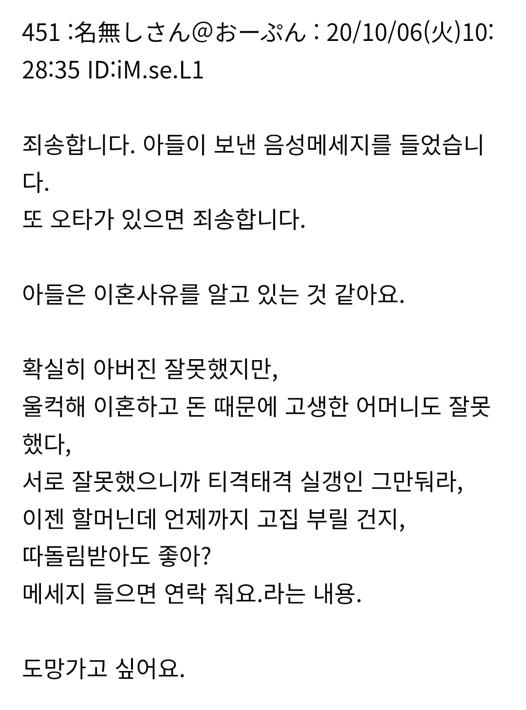

좆같은 피가 이어졌네
ㅅㅂ놈
남일 같지 않네 이혼까진 못 갔지만..
엄마 심정에 공감되네
혼자 얼마나 고생하며 키워왔을텐데 가장 빛나는 그 날 아들로부터 시작해서 모두에게 일생의 모욕과 조롱을 당하다니
ai 소설
6년전의 ai 소설이라니 귀하네
일본인들 보면 대부분이 최대한 참아주고 거절하지 않는 문화에 맞춰서 사니까
아주 가끔씩 저런 안하무인 인간 이하의 정신나간 것들이 있더라
일제시대 악독한 그런 것들도 그렇고 90년대 폭주족 이야기들도
저런 것들 이야기같음
음.. 아들이 아무리 쓰레기라 해도 아들은 기본적으로 같이 산 엄마편이기 마련인데, 엄마가 말 안한거 있는거 아냐? 이거만 보고는 중립인데..
나도 여자애 비슷한 친구 있었는데. 엄마랑 원수라서 인연 끊고 살거든. 그건 엄마가 애를 존나 패고 학대한 케이스긴 했어. 다 큰 후엔 아빠랑 손잡고 엄마 상대로 민사소송하고 그랬지 이혼 위자료로 받은 아파트는 자기 양육비로 받은거니 돌려달라고. 걔도 엄마는 어디가서 딸 하나 홀몸으로 겨우 키워놨더니 통수 맞았다고 질질 짜고 다니고 딸 나쁜년 만든다고 들음
부모가 자식한테 희생하는 걸 당연하게 생각하는 경우가 있음
나도 울 애비가 밖에서 성병 걸려 오는 바람에 양친이 이혼했는데
난 엄마 결정을 이해하지만
내 동생은 나이 들어서까지도 자식을 사랑한다면 엄마가 참았어야 했다고 원망하더라
씨도둑질은 못한다고,,, 길러놨더니 애비랑 다를게 없네
요즘엔 사람들이 타인의 아픔을 자기 기준의 잣대로 평가하는게 문제임.
사탕 하나를 잃어버려도 누군가에겐 그깟 사탕이 될수도 있지만 누군가에겐 호주머니속의 전부일수도 있는건데....
본인들은 팩트폭행이라고 생각하는 경향이 있는데 단지 공감능력이나 사회적 지능이 떨어지는 것뿐.
줄여서 쿨찐이라고 하면 될듯
자식농사 망쳤으면 99퍼는 본인이 이상한거지
좆같은새끼
.. 아마 이혼한남편이 어렸을때부터 가스라이팅한거임
애비의 개새끼 유전자가 발현됐네
애비랑 똑같네 ㄹㅇ
아빠입장이랑 아들입장도 들어봐야
사람 성품은 절반은 타고나는거더라
부모가 고생고생하면서 키워줘도 못받은것만 생각하고 앙심품고 부모와 손절치는놈은 실존한다...
개새끼가
씹새끼가 튀겨죽일새끼
어떻게 가장 빛나는 날 가장 고생한 자신의 어머니를 공개적으로 비난을 할수있지?
이건 자기 얼굴에 침 밷는 행동 그 자체인데